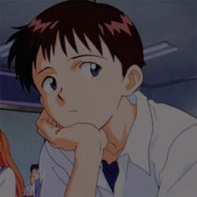

Shinji Ikari
Shinji inicialmente muestra una personalidad pasiva y relajada, heredando dichos rasgos de la vida tranquila que tenía con su sensei. Pero detrás de su actitud, en realidad, muy a menudo lo conmueve lo que lo rodea. En el episodio 01, después de haber mantenido la calma durante un largo período de tiempo, el joven deja que su ira estalle una vez está frente a su padre. Shinji sufre de falta de confianza en sí mismo, lo que también explica su lado pasivo, y los hechos que vive en NERV no mejoran su condición. A pesar de esto, es consciente de sus propias faltas, siendo gentil y compasivo. Normalmente, Shinji es bastante introvertido. En situaciones sociales se muestra incómodo, y a menudo exhibe dificultad para controlar sus emociones. Tiene un gran miedo a ser odiado, probablemente porque fue abandonado en su juventud. Gendo abandonó a su hijo a los 4 años, lo que traumatizó al joven por el resto de su vida. Por esa razón, Shinji se ha encerrado en sí mismo y rechaza cualquier apego a los demás, por temor a ser traicionado nuevamente. Debido a su frágil estado emocional, el joven decide aislarse del mundo usando los auriculares, escuchando música con su reproductor SDAT. Suele reproducir siempre las pistas 25 ("You Are the Only One") y 26 ("Blue Legend").
